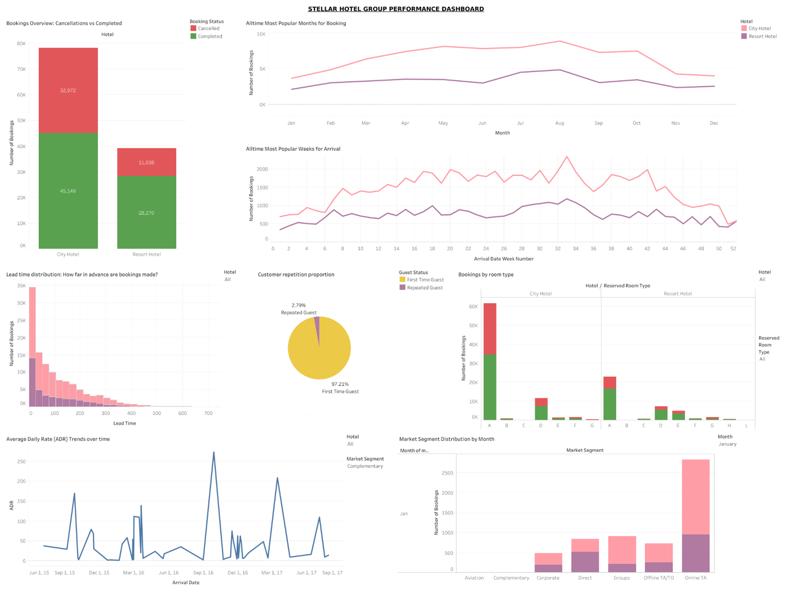
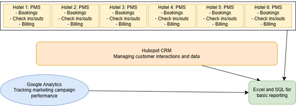
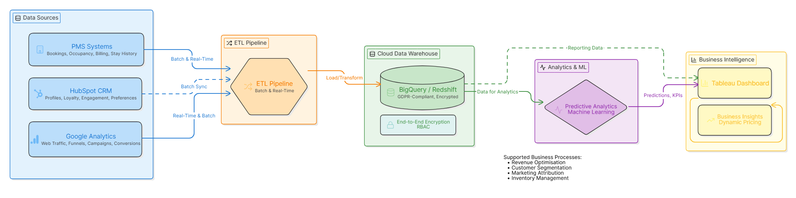
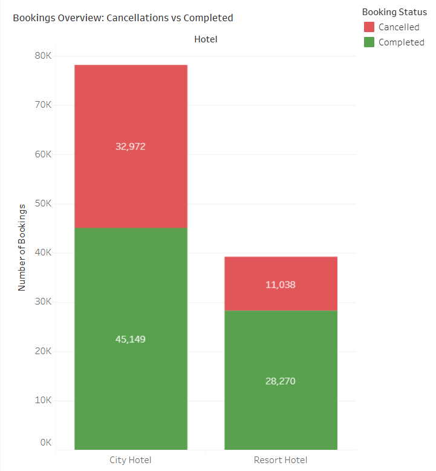
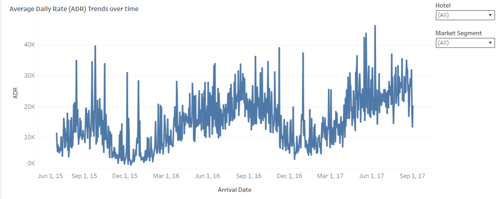

Featured Data Analytics Project
A consultancy-style big data analytics project focused on improving operational visibility, customer insights, and pricing optimisation for a UK hotel chain using cloud data warehousing, predictive analytics, and Tableau dashboards.

Stellar Hotel Group operates six midscale hotels across the UK. The organisation faced challenges caused by fragmented systems, disconnected customer data, and limited analytical capabilities.
This project evaluated the company’s existing technology landscape and proposed scalable big data solutions including cloud data warehousing, predictive analytics, and interactive dashboards to improve operational decision-making and customer experience.
Each hotel operated independent property management systems, making it difficult to gain a unified operational view.
PMS systems, HubSpot CRM, and Google Analytics were not integrated, limiting customer insight and marketing effectiveness.
Reporting relied heavily on Excel and basic SQL queries, preventing advanced analysis and real-time insights.
Room pricing decisions were based largely on historical data instead of predictive analytics and dynamic demand forecasting.
Stellar Hotel Group currently operates with fragmented, disconnected systems across its six hotel properties. Each hotel stores operational data locally within independent Property Management Systems (PMS), while HubSpot CRM and Google Analytics operate separately with limited integration.
This architecture creates significant data silos, preventing the organisation from gaining a unified customer view or performing advanced analytics across all properties.

The proposed architecture introduces a cloud-based big data ecosystem that centralises operational, customer, and marketing data into a unified platform.
By integrating PMS systems, HubSpot CRM, and Google Analytics through ETL pipelines, Stellar Hotel Group can enable real-time analytics, predictive modelling, and organisation-wide reporting.

Recommended technologies such as Google BigQuery and AWS Redshift to centralise fragmented data.
Proposed ETL processes to standardise, clean, and integrate heterogeneous datasets.
Machine learning models would support demand forecasting and dynamic pricing strategies.
Unified customer profiles would enable personalised marketing and improved retention.
A Tableau dashboard was developed to provide operational insights across bookings, cancellations, room demand, customer loyalty, and revenue trends.
Compared completed bookings and cancellations to identify operational trends.
Tracked ADR trends to support pricing optimisation strategies.
Visualised booking lead times to improve staffing and pricing decisions.
Analysed repeated guest rates and retention patterns.
The dashboard followed key visualisation principles including consistency, clarity, interactivity, storytelling, and actionable insight generation.

A stacked bar chart was used to clearly compare completed bookings against cancellations, allowing management to quickly identify cancellation trends and operational risks.

A line chart was selected to visualise ADR fluctuations over time, supporting dynamic pricing decisions and revenue optimisation.
Phased implementation was recommended to reduce disruption during migration.
Encryption and multi-factor authentication were proposed to protect sensitive customer data.
Staff training programmes were recommended to improve confidence using new technologies.
This project strengthened my understanding of enterprise analytics architecture, dashboard storytelling, predictive analytics, and the role of big data technologies in improving operational decision-making.
It also enhanced my ability to communicate technical solutions within a consultancy-style business context.